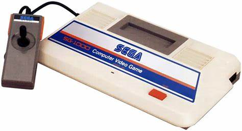

SG-1000
The SG-1000 is a home video game console manufactured by Sega. It was Sega's first entry into the home video game hardware business. Developed in response to a downturn in arcades starting in 1982, the SG-1000 was created on the advice of Hayao Nakayama, president of Sega's Japanese arm, and was released on July 15, 1983, the same day that Nintendo released the Family Computer in Japan. It also had a limited release in Australia and New Zealand.